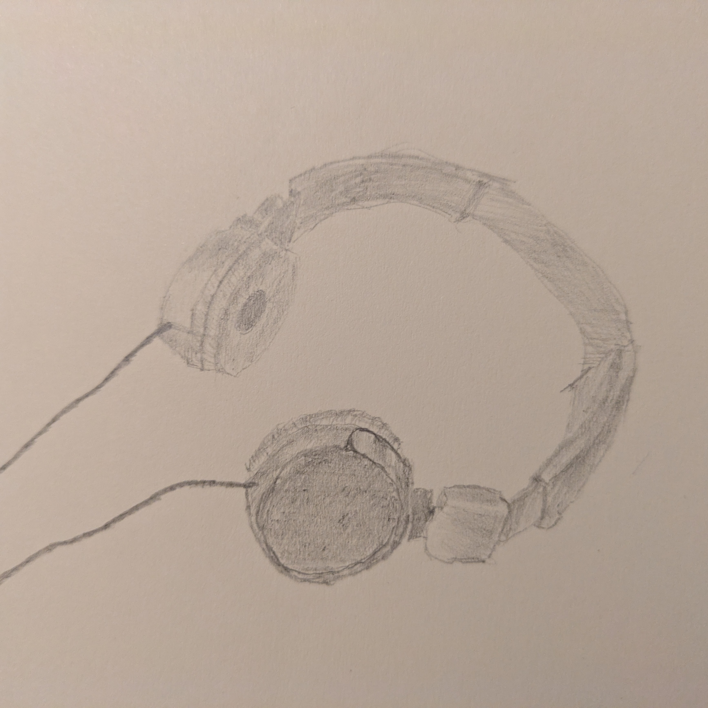

A Simple Rofi Script to Control Cmus
Just a short one. I found this useful, so I’m putting it here for when I inevitably forget about it. Perhaps someone else will get some value out of it.
I use cmus as my music player on my OpenBSD laptop. One irksome habit I’ve developed is throwing the terminal in which it’s playing into the shadow realm and struggling to find it to pause my music when my attention needs to be somewhere other than my screen. After reading up on my favoured music player and various methods of making the whole situation a little more ergonomic, I’ve settled on using rofi with a very basic little script that interacts with cmus-remote. I just hit Meta+m and up pops a rofi window (running ‘rofi -show cmusctl’ – which is just this script sitting in ‘.config/rofi/scripts/’). Nice and easy. If I had play/pause, next, etc buttons on my keyboard I’d just bind those to cmus-remote commands, but my old Thinkpad doesn’t have those keys so here we are.
Here’s the script:
#!/bin/sh
#
# Script to control cmus from rofi via cmus-remote
#
if [ x"$@" = x"⏯ Play/pause" ] ; then
cmus-remote -u
elif [ x"$@" = x"⏭ Next" ] ; then
cmus-remote -n
elif [ x"$@" = x"⏮ Previous" ] ; then
cmus-remote -r
fi
status="$(cmus-remote -C status | grep status | awk '{ print $2 }')"
current="$(cmus-remote -Q | grep file | awk -F"/" '{ print $5 $7 }' \
| sed s/.mp3//g | sed s/[0-9]//g)"
echo "Status: $status"
echo "Currently playing: $current"
echo "⏯ Play/pause"
echo "⏭ Next"
echo "⏮ Previous"
I do love listening to old goth rock while I write and code
That’s all from me for now.
Toodles,
–Antony F.